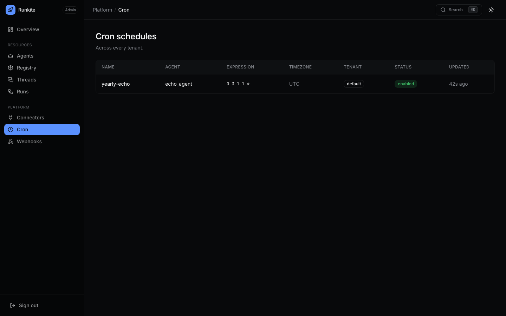

Operate
Cron
Run agents on a schedule through the control plane's existing managed-run path, with shared fire claims coordinating replicas.
What it is
Named schedules in langgraph.json (5-field cron + optional IANA timezone).
Each fire creates a run on a stable schedule thread so history stays browsable. Configuration-file schedules use the default tenant and retain cron:<schedule-name>.
Why it is here
Scheduled work must not depend on a laptop cron or a sidecar that bypasses grants, kill, and audit. The plane owns the fire; runners only execute jobs.
How to implement
- Add a
cronblock to a discovered config (schedules bootstrap from every file, like graphs). - Point
agent_idat a registered agent; setexpressionand optionaltimezone/input. - Confirm the schedule in Admin → Cron (or
GET /internal/cron). - After a fire, open the schedule's thread from Admin Cron and its run stream like any other run. Default schedules retain
cron:<name>.
"cron": {
"daily-report": {
"agent_id": "my_agent",
"expression": "0 9 * * *",
"timezone": "America/New_York",
"input": { "messages": [{ "role": "human", "content": "generate the daily report" }] }
}
}
In the product

Run visibility (v0.10.0)
Admin → Cron refreshes every 15 seconds and shows the latest retained run on each schedule's resolved thread. Open a linked run status for its result, or use the thread link to browse retained history. Links select the schedule's exact tenant. Disabled schedules can still have retained runs.
Run links retain the exact tenant and stored run incarnation. If the run was deleted and its ID reused, the old link refuses to display the replacement. Reference views are read-only snapshots: live events, cancellation and child-run navigation are unavailable because those bare-ID operations cannot stay bound to the original record. Refresh retained record performs another guarded read. Without a durable incarnation, the status remains visible without a result link.
No retained runs means no run is currently stored for that tenant and thread. It does not prove the schedule never fired: history may have been deleted. History unavailable means a history read failed; it does not report a dispatch failure. A refresh error leaves the last displayed data marked as potentially stale.
Skipped overlaps and failures before run creation do not have their own records in this view. Runs created by another caller on the same thread also appear. The view never substitutes a different tenant's history for a missing thread.
The existing definition-only GET /admin-api/cron response is unchanged.
Operators can opt into the same retained-run summary with
GET /admin-api/cron?include_history=true. This visibility does not add a
scheduler, per-fire receipts or retries. The separate optional calendar preview below is not retained execution history.
Named-tenant continuity (v0.10.0)
Default schedules keep cron:<name>. Named tenants first select their own versioned cron-tenant:v1:<digest> thread, reuse an existing legacy cron:<name> only when owned by that exact tenant, or create their canonical thread. This lets supported tenant-scoped schedules with equal names run independently without importing conversation history.
Upgrade: stop all cron writers before upgrading or rolling back. Mixed old/new schedulers can split a new named schedule's history. Existing owned legacy state stays on its original thread. If both owned threads exist, canonical takes precedence; inspect both because state is never merged automatically. Named LangGraph tenants still need proxy checkpoints. This adds no schema migration and does not repair older databases that retain a global schedule-name constraint. See the routing contract and operator procedure.
Next calendar boundary (v0.10.0)
Admin Cron can show one projected future calendar boundary from the same pinned backend parser used by the scheduler. Read the UTC computation time and effective timezone with it. A boundary is strictly after that computation instant; it is not reserved work, a dispatch promise, a live countdown or evidence that a previous fire occurred.
GET /admin-api/cron?include_preview=true adds next_fire_preview without thread/run/claim history reads or history fields. Combine it with include_history=true when both views are needed. Definition-only and history-only callers keep their existing shape and read cost. All preview rows in one response share a single computed_at in UTC; a scheduled row also has UTC next_fire_at.
- Scheduled: a projected next calendar occurrence, not a guarantee of a run.
- Disabled: no next execution promise, even if retained history exists.
- Invalid expression: correct the configured expression; do not retry a run to repair it.
- No future fire: the pinned parser returned no future occurrence.
- Relative interval unavailable:
@everyneeds an anchor that preview does not read, so no next time is invented.
An invalid configured timezone is flagged when it actually causes UTC fallback. An explicit expression-level TZ= or CRON_TZ= can instead select its own zone without that fallback flag. DST gaps, repeated times and date constraints follow the pinned backend parser. Refresh through the existing page flow for a newer snapshot. If no run appears at a projected boundary, investigate logs, claims, overlap, admission and workers; preview does not record those outcomes. See the engineering contract and operator procedure.
Uncertain delivery (v0.10.0)
A queue acknowledgement can fail after a scheduled run starts or finishes. The scheduler now retains that occurrence's fire claim when the original run was admitted, completed or remains uncertain. It retries only a definite precreation rejection or a successful atomic rollback proving the original run never started. Cleanup failures and ambiguous commits retain the claim for reconciliation. Inspect the exact original run ID recorded in the warning; the latest run on a shared schedule thread is not an identity proof. Ordinary HTTP errors remain unchanged. This adds no schema migration, fire ledger or exactly-once business-effect guarantee. Upgrade every cron-serving replica before relying on the correction. See the retry contract and regression scope.
What to expect
- Multi-replica: the supported shared Postgres profile coordinates matching schedule/fire timestamps through
cron_claims. A successful claim is not proof that dispatch or a business effect completed. - Missed fires: restarting schedules catch the latest miss only (no backlog storm); brand-new schedules start from registration time.
- Overlap: if the previous fire’s run is still in flight, the next fire is skipped like any busy thread.
- Relative intervals:
@everykeeps its local not-due anchor so intervals longer than the poll tick can become due. It has no globally synchronized phase across replicas; preview intentionally supplies no anchor or next time.
MySQL claim correction (v0.10.0): equal tenant/schedule/fire-time claims use an atomic insert. A duplicate-key result loses the claim with either value of the valid clientFoundRows driver option. Other database errors remain errors. Native before/after qualification on an owned MySQL 8.4 fixture reproduced twenty duplicate winners before the fix and exactly one winner in each concurrent driver profile afterward. This adds no schema migration, dispatch receipt or exactly-once business-effect guarantee. See the claim contract and native regression scope.
Reference: docs/configuration.md · Admin UI guide → Cron · Runs & threads